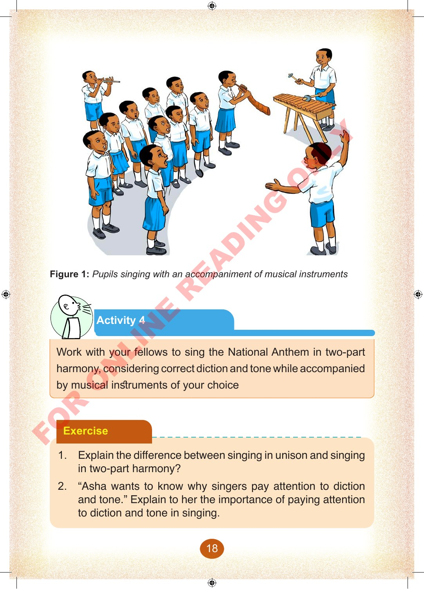
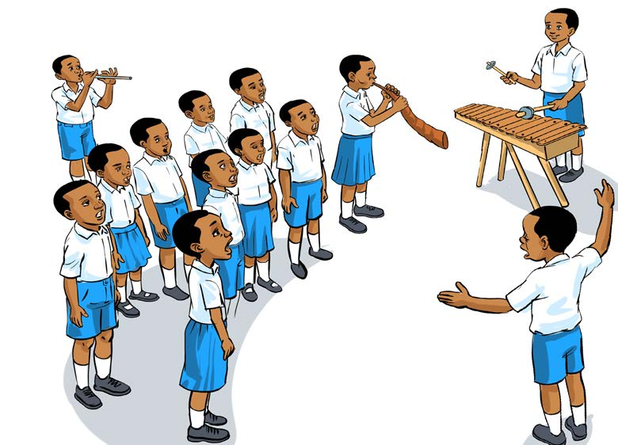

Figure 1: Pupils singing with an accompaniment of musical instruments
Activity 4
Work with your fellows to sing the National Anthem in two-part harmony, considering correct diction and tone while accompanied by musical instruments of your choice
Exercise
1. Explain the difference between singing in unison and singing in two-part harmony?
2. “Asha wants to know why singers pay attention to diction and tone.” Explain to her the importance of paying attention to diction and tone in singing.